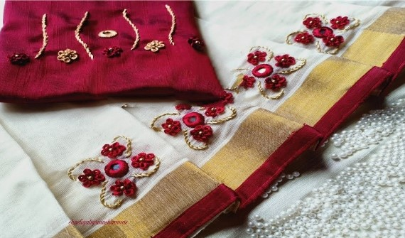
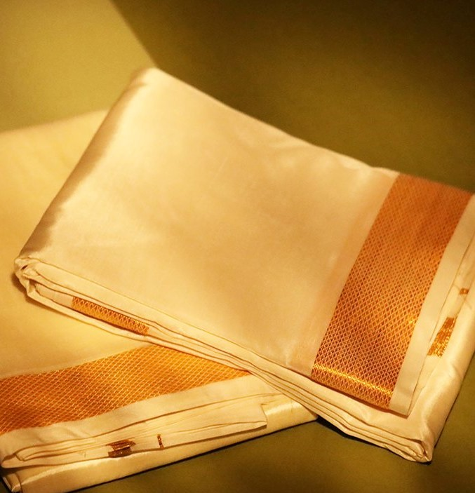
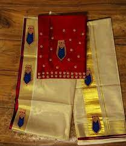

THE WHOLESALE MARKET FOR KERALA TISSUE SAREE, DHOTI AND SET MUNDU FROM THE HANDS OF OUR BELOVED WEAVERS TO THE HEARTS OF OUR CUSTOMERS

TISSUE SAREETraditional clothing of women in Kerala is the ‘Kerala Saree’ or the mundum neriyathum. This is in two pieces, one is draped on the lower part of the body and then the neriyathu is worn over a blouse. It was tradition to have it tucked inside the blouse but in modern times it is worn over the left shoulder.

DHOTIThe men of Kerala tend to be more conservative than the women and stick to tradition. Mundu, is worn on the lower part of the body and is a long garment tucked around the waist, it reaches their ankles. Many prefer to wear it above their waist and the higher caste drape a cloth over their shoulders. This traditional attire is worn by men of all religions in Kerala.

SET MUNDUTraditional Dresses of Kerala - Kerala Costumes and Traditional Wear. The traditional wear of the state is called 'Mundu' which is worn on the lower portion of the body, from the waist to the foot. It is white and is worn by both men and women. It resembles a long skirt or a dhoti.
.JPG)